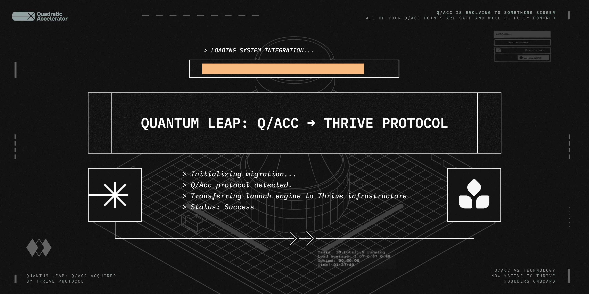

Q/Acc: Quantum Leap
Originally published at https://paragraph.com/@qacc/q-acc-quantum-leap

We founded the Quadratic Accelerator (q/acc) 18 months ago to drag tokenization out of the dark ages. This may sound odd, but the current approach to tokenization is bespoke, haphazard, and unusable for real startups. We compressed every step of a healthy token launch into a trustless protocol.
Over the course of two seasons, we launched 12 token economies, created over $7M in net-new FDV, locked more value than we received in grants, and onboarded thousands of first-time users. In a market drowning in casinos and rugs, q/acc set a new standard.
We learned several valuable lessons in the process:
-
Projects need liquid capital in addition to great launches
-
Ecosystems want a one-stop shop for builder sourcing and support
-
The cohort model of seasons is an expensive first-run experiment for protocols
With these learnings in hand and the imminent launch of our v2 platform, we approached our friends at Thrive with an audacious proposal, and we’re thrilled to announce that Q/Acc has been acquired by Thrive Protocol.
The Q/Acc launch engine will become part of Thrive’s native infrastructure. Thrive has already proven its ability to win ecosystems, find top-notch builders, and support them to TGE. It was inevitable that an in-protocol launch mechanism would be a part of that flow. The result is that projects will now receive a structured, accelerated go-to-market railgun providing:
-
Non-dilutive funding to fuel their critical early roadmap milestones.
-
Compliant, DeFi-native token launches without rugs or dumps.
-
A seamless arc from MVP → funding → tokenization.
For the first time, the web3 builder’s journey is fluid and optimized. Thrive identifies and rewards value. Q/Acc tech will tokenize it. Together, they form the end-to-end value chain that protocols can easily plug into.
Q/Acc founders will take critical positions within Thrive, combining their expertise and technology to achieve far more together than they could alone:
This is the quantum leap: the builder’s journey collapsed into a single extensible protocol. We’re just getting started. Over the next several weeks, we’ll be integrating our product visions and infrastructure and crystallizing our message to the market.
The only takeaway for now is that if you're a builder, you want to be on this ship.
Follow us on X for updates and get ready for an unprecedented rate of growth. The time has never been more right.
-
🐦 Follow: @thriveprotocol
-
📬 Subscribe: thrive.xyz
https://x.com/thriveprotocol/status/1961119709295690216
Originally published on Quadratic Accelerator